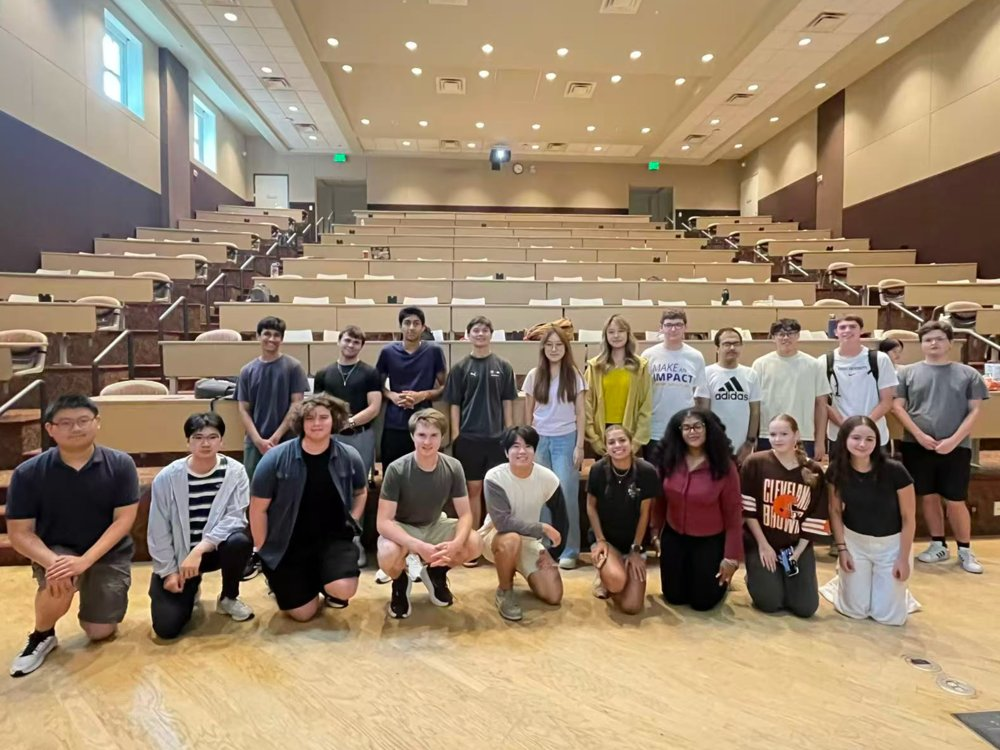
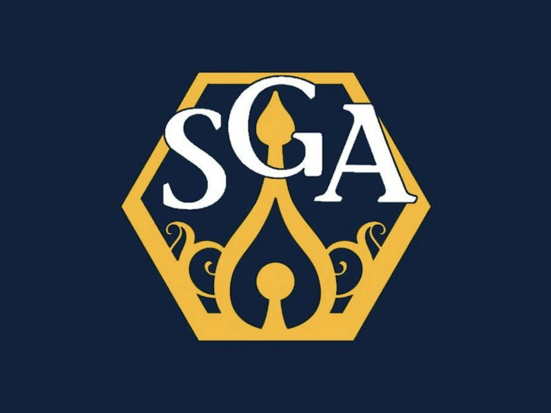

Leadership & Services
Leadership
-
Aug 2024 – present

1 / 4President
Emory Undergraduate Mathematics Association (EUMMA), Emory University
A recognized student organization of Emory College, founded in 2005, that builds the undergraduate mathematics community through academic panels, study sessions, competition and AI training, and social events.
- Coordinated more than 10 research and pre-professional networking panels, connecting students with more than 30 industry experts.
- Launched the AI4S initiative to promote AI literacy through workshops, discussions, and mentorship, including a group Kaggle competition each semester.
- Started monthly training sessions on Kaggle competitions and the Mathematical Contest in Modeling, and led a team to compete in MCM.
- Shared research and career resources with members, including the Directed Reading Program, REUs, and SIRE.
-
2023 – 2024

First-Year Councilor
Student Government Association (SGA), Emory University
- Represented the first-year class in Emory’s Student Government Association, voicing student concerns in council meetings.
- Gathered feedback from first-year students and helped plan events that support their transition to campus life.
- Collaborated with SGA committees on initiatives to improve student life and access to campus resources.
Services & Outreach
-
2026
Teaching Assistant, Algebra and Geometry
AwesomeMath Summer Session at MIT
Taught and mentored pre-college students in competition algebra and geometry, helping young learners build problem-solving skills and confidence in mathematics.
-
2025
Student Volunteer, Attendee
Atlanta Mathematics of Data Science Bootcamp, Georgia Tech and Emory
Studied Lipschitz-regularized χ2-GANs, which combine χ2-GAN and WGAN, and helped support a bootcamp that connects students across Atlanta’s universities.
-
2025
Student Volunteer
Atlanta Science Festival, Exploration Expo
Shared mathematics with the public on behalf of the Emory Mathematics Department, making math hands-on and approachable for families and young visitors.